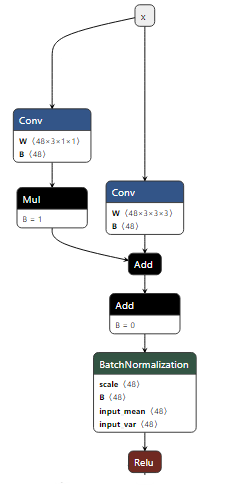

YOLO-NAS FX graph Quantization#
In this example, we present an Object Detection Model Quantization workflow. We used YOLO-NAS as a demonstration to illustrate the effectiveness of FX-graph-based QAT and PTQ.
We conduct QAT (Quantization-Aware Training) experiments and show competitive results compared with PTQ (Post-Training Quantization).
The finally exported ONNX model can used for NPU hardware compile and deployment.
Highlight Overview#
Quantization schema: INT8, symmetric, powof2 format quantization scale for weight, bias, activation.
Hardware friendly: We give step-by-step instructions and let the user smoothly deploy in AMD NPU for hardware acceleration.
Prerequisites information/knowledge#
YOLO-NAS is an object detection model in computer vision tasks. Developed by Deci AI. The original Github repo can be found here super-gradients.
NOTE: In this Issue, the pre-trained weight download link move to yolo_nas_s_coco.pth. Please download the pre-trained weight in advance and put it in the proper place.
$ pip install super-gradients==3.7.1
$ wget https://sg-hub-nv.s3.amazonaws.com/models/yolo_nas_s_coco.pth
$ mv yolo_nas_s_coco.pth /home/{USER_NAME}/.cache/torch/hub/checkpoints/
Before you perform the quantization, If applicable, users can put some time into understanding of YOLO-NAS model architecture. The better understanding of this model the better debugging/solving in real hardware deployment.
Understanding the Network structure#
NOTE: This model adopts NAS (Neural Architecture Search) technology, in the validation process some parts of the model are folded, so the training and validation models are different. Relative code can be found: qarepvgg_block.py.
We now using the tool netron to visualize the difference between the training and validation models.
yolo_nas = super_gradients.training.models.get("yolo_nas_s", pretrained_weights="coco").to(device).eval()
# This model is training format.
torch.onnx.export(yolo_nas, dummy_input, "./fp32_yolo_nas_m.onnx")
# Perform the model folding (merge several conv + bn to one conv layer)
yolo_nas.prep_model_for_conversion(input_size=[1, 3, 640, 640])
torch.onnx.export(yolo_nas, dummy_input, "./fold_fp32_yolo_nas_m.onnx")
In the training process, all modules are not folded. The model structures as follows:
In the validation process, after calling func: prep_model_for_conversion, the above modules are folded, and the folded model is visualized as follows:
Understanding the network output#
The model output is processed by class NDFLHeads, the output contains two parts decoded_predictions and raw_predictions. The following parameters are shown in COCO Dataset Param (80 classes).
decoded_predictionscontains 2 parts: (NOTE: This part tensors/values are used for inference)pred_bboxes: with shape: [batch_size, 8400, 4]pred_scores: with shape: [batch_size, 8400, 80]
raw_predictionscontains 6 parts: (NOTE: This part tensors/values are used for training, inference/deployment not needed.)cls_score_list: with shape [batch size, 8400, 80]reg_distri_list: with shape [batch size, 8400, 68]anchors: with shape [8400, 4]anchor_points: with shape [8400, 2]num_anchors_list: [6400, 1600, 400]stride_tensor: [8400, 1]
PyTorch FX-Graph model#
In the Quark Fx-graph-based quantization tool, we adopt the PyTorch Fx as inter-represent. More information can be found torch.fx. PyTorch.fx is a fully described graph like the ONNX graph. Every operation is represented as Node. As every node saves information about the operation type, we can easily recognize the computation pattern and insert the quantizer to perform quantization. We use the official PyTorch API to get the Fx graph. Or to say transform torch.nn.Module to torch.fx.GraphModule.
# PyTorch version < 2.5
from torch._export import capture_pre_autograd_graph
example_args = (torch.randn(1, 3, 256, 256), )
graph_model = capture_pre_autograd_graph(SimpleConv(), example_inputs)
# PyTorch version >= 2.5
from torch.export import export_for_training
example_args = (torch.randn(1, 3, 256, 256),)
graph_model = torch.export.export_for_training(SimpleConv(), example_args).module()
NOTE: Using to_folder function, this function allows you to dump out the generated FX code to a folder. Which can help you understand the fx-graph concept well.
graph_model.to_folder("./{folder_to_save}")
The dumped code as follows:
...
def forward(self, x):
...
conv2d = torch.ops.aten.conv2d.default(input, weight_1, bias_1, [2, 2], [1, 1])
batch_norm = torch.ops.aten.batch_norm.default(conv2d, bn_weight_1, bn_bias_1, bm_mean_1, bn_var_1, False, 0.03, 0.001, True)
relu_ = torch.ops.aten.relu_.default(batch_norm)
...
Overall summary#
As YOLO-NAS adopts the NAS technology, the model used for training is different from the inference model. But for PTQ/QAT, we must fold the network first, then insert the quantizer to perform quantization.
As we perform QAT, we need to keep the
raw_predictionsin quantization fine-tuning. After finishing the training and before exporting toONNXmodel, we need to mask/delete this part.Have a glance at PyTorch
torch.fx.GraphModule(torch.fx.GraphModule) and transform graph APItorch.export.export_for_training(export_for_training). Which can help you debug and more easily quantize the model in your desired manner.
Preparation#
Install the required third-party Python packages:
pip install super_gradients
Prepare the COCO Dataset 2017 Dataset
Download coco dataset: annotations, train2017, val2017
After Unzip, the data directory structure would be the following:
coco_data_dir ├── annotations │ ├─ instances_train2017.json │ ├─ instances_val2017.json │ └─ ... └── images ├── train2017 │ ├─ 000000000001.jpg │ └─ ... └── val2017 └─ ...
More and direct instruction you can see: class COCODetectionDataset
Modify the network code to indicate the quantization scope:
Reason:
In the YOLO-NAS source code, there is a large amount of code used for generating the bounding box and bounding-box offset, like the above anchor_points and anchors. Many of them are only used in the training phase and do not take effect in the inference phase. These tensors should not be quantized as:
These parts of codes belonging to auxiliary codes, that are only used for the training. Will not be used for inference. For inference, we only need decoded_predictions shown above.
For better training precision, these auxiliary codes should not be quantized
In the following image, Tensor 1 & Tensor 2 (Red) should be quantized as these two tensors take effect in the inference reasoning. But all the Tensors & Operations in the Green Circle should be excluded from the quantization scope. If we quantize this green circle scope, it will introduce more quantization errors for tensor 1 and tensor 2 and decrease accuracy.
How QuantStub and DeQuantStub works:
QuantStub and DeQuantStub is a concept in Quark. Users should use these operations to modify the PyTorch source code to convey the desired quantization scope (which part should be quantized and others not).
All tensors propagated included in the [QuantStub, DeQuantStub] scope will be noted as quantizable. The Tensor/operation from the QuantStub will be regarded as seeds, then adopt depth and width first search to annotate the following computation operation/tensors as quantizable until [meet the DeQuantStub operation/ the network forward process finished].
More information can be founded in Quark Source code:
tag_quant_node.pyIn addition: all code under the with no grad scope (
@torch.no_grad()) will be regarded as no quant.
How to modify the PyTorch source to convey the quantization motivation:
In python file: customizable_detector.py
# 1. Import QuantStub and DeQuantStub from Quark from quark.torch.quantization.graph.ops.quant_stubs import QuantStub, DeQuantStub # 2. Add the number in class CustomizableDetector's __init__ function class CustomizableDetector(HasPredict, SgModule): def __init__(...): ... self.quant_stub = QuantStub # add this code self.dequant_stub = DeQuantStub # add this code (but not used) # 3. Modify the forward() function def forward(self, x): x = self.quant_stub(x) # add this code x = self.backbone(x) x = self.neck(x) return self.heads(x) # NOTE: For the above modification, some explanations: # In the above code, the quant scope starts from input of the forward function, # meaning all param & operation in [self.backbone] & [self.neck] & [self.heads] will be quantized # (As we do not use self.dequant_stub), # However some codes (self.heads) used for generating constant tensors we do not need quant. # We need to modify the code in self.heads
In python file: dfl_heads.py
# 1. Import QuantStub and DeQuantStub from Quark from quark.torch.quantization.graph.ops.quant_stubs import QuantStub, DeQuantStub # 2. ADD the number in NDFLHeads __init__ function class NDFLHeads(BaseDetectionModule, SupportsReplaceNumClasses): def __init__(...): ... ... self.dequant_stub = DeQuantStub # add this code self.quant_stub = QuantStub # add this code # 3. in function def _generate_anchors(self,...) modify the code as follows # Why we modify in this way: # Quant scope: quant_stub -> tensors -> dequant_stub # Quark Fx tool will quant the tensor among the Quant scope, # so, all tensor out of the Quant scope will not be quantized. def _generate_anchors(self, ...): ... ''' the original super-gradients code ''' anchor_points = torch.cat(anchor_points) # original code stride_tensor = torch.cat(stride_tensor) # original code # add the code below anchor_points = self.quant_stub(anchor_points) # add this code anchor_points = self.dequant_stub(anchor_points) # add this code stride_tensor = self.quant_stub(stride_tensor) # add this code stride_tensor = self.dequant_stub(stride_tensor) # add this code return anchor_points, stride_tensor # NOTE: For the above modification, some explanations: # the code used for generate [anchor_points] & [stride_tensor] should not be quantized, # as the code in this function: # 1) have no trainable parameters # 2) anchor_points & stride_tensor are facilitate tensor will not change during inference & training. # 3) quantizing these codes will accumulate quantized error and finally damage [anchor_points] & [anchor_points] representation ability. # 4) As we not use dequant_stub in customizable_detector.py, and the propagate mechanism, anchor_points and # stride_tensor will be quantized. In this way, we can maintain the accuracy as much as possible.
Perform PTQ & QAT for YOLO-NAS#
In the following, we give a brief introduction to the quantization.
1.Prepare data and model#
from super_gradients.training.dataloaders import coco2017_val_yolo_nas, coco2017_train_yolo_nas
# ===== prepare the data for training, validation and calibration
# Calib is used for PTQ
valid_dataloader = coco2017_val_yolo_nas(dataloader_params={"batch_size": 25},
dataset_params={"data_dir": args.data_dir})
calib_data = [x[0].to(device) for x in list(itertools.islice(valid_dataloader, args.calib_data_size))]
# validation & training dataset
valid_dataloader = coco2017_val_yolo_nas(dataloader_params={"batch_size": args.val_batch_size},
dataset_params={"data_dir": args.data_dir})
train_dataloader = coco2017_train_yolo_nas(dataloader_params={"batch_size": args.train_batch_size},
dataset_params={"data_dir": args.data_dir})
# ===== prepare the data for training, validation and calibration
yolo_nas = super_gradients.training.models.get("yolo_nas_s", pretrained_weights="coco").to(device).eval()
yolo_nas.prep_model_for_conversion(input_size=[1, 3, 640, 640])
graph_model = torch.export.export_for_training(yolo_nas.eval(), (dummy_input, )).module()
At this phase, the original torch.nn.Module` will be translated to torch.fx.GraphModule`, which only contains torch.ops.aten operators and is fully functional model.
2.Set quantization Config and Quantizer#
# we adopt INT8, power of 2 format scale, symmetric configuration for weight, bias and activation.
INT8_PER_TENSOR_SPEC = QuantizationSpec(dtype=Dtype.int8,
qscheme=QSchemeType.per_tensor,
observer_cls=PerTensorPowOf2MinMaxObserver,
symmetric=True,
scale_type=ScaleType.float,
round_method=RoundType.half_even,
is_dynamic=False)
quant_config = QuantizationConfig(weight=INT8_PER_TENSOR_SPEC,
input_tensors=INT8_PER_TENSOR_SPEC,
output_tensors=INT8_PER_TENSOR_SPEC,
bias=INT8_PER_TENSOR_SPEC)
quant_config = Config(global_quant_config=quant_config,
quant_mode=QuantizationMode.fx_graph_mode)
quantizer = ModelQuantizer(quant_config)
3.Calibration (PTQ) / Training (QAT) (Optional)#
# PTQ will be performed automatically.
quantized_model = quantizer.quantize_model(graph_model, calib_data)
# QAT
# More Information user can see function train_model
train_model(quantized_model)
NOTE: the training result (QAT) rely on training and other parameters.
4.Exported to Onnx (prepare for NPU compile)#
Note
For AMD’s NPU deployment, there are some hardware constraints (e.g., the quantization scale of two inputs of the Add operator has a constraint: the abs(exponent_of_scale1 - exponent_of_scale2) should not be larger than 7).
As described above, YOLO-NAS has two parts of output called decoded_predictions and raw_predictions. Before exporting to the ONNX model, we need to neglect raw_predictions and only maintain the decoded_predictions as output.
5.Preparation before export#
# 1. Call freeze() will automatically perform the hardware constrain and optimization.
frozen_model = quantizer.freeze(quantized_model.eval())
# Mask the output of raw_predictions
class ModifiedModel(torch.nn.Module):
def __init__(self, original_model):
super(ModifiedModel, self).__init__()
self.original_model = original_model
def forward(self, x):
outputs_1, outputs_2 = self.original_model(x)
return outputs_1
modified_mode = ModifiedModel(frozen_model) # This model only has output of decoded_predictions, and used for export to ONNX
6.Export to ONNX model#
# export to onnx model
from quark.torch import export_onnx
example_inputs = (torch.rand(1, 3, 640, 640).to(device), ) # As NPU compile can better compile with batch-size 1
export_onnx(
model=modified_mode,
output_dir=args.export_dir,
input_args=example_inputs[0]
)
7.Visualization ONNX model (Optional)#
After quantization, visualize the onnx model to check whether quantization meet the desired config. As the generated ONNX model is relatively difficult to view and inspect. You can use our supported Python script to simplify the ONNX model.
from onnxsim import simplify
quantized_model = onnx.load(exported_onnx_model)
model_simp, check = simplify(quantized_model)
onnx.save_model(model_simp, "./quant_result/sample_quark_model.onnx")
Then using netron to visualize:
netron ./quant_result/sample_quark_model.onnx
8.Compile and deploy on AMD NPU device#
For this session, please refer to AMD NPU compile and deployment documents.
Quick start#
We provide a clean and compact code for a quick start, the user can directly run to quant the YOLO-NAS,
python yolo_nas_pow2_int_quant.py --data_dir={DATA_PATH_TO_COCO} --qat
Quantization Result#
Note
After we call freeze(), it will automatically perform the hardware constraints for NPU compilation.
The test accuracy may change.
Model format |
mAP@0.50:0.95 |
|
|---|---|---|
FP32 model |
0.6466 |
0.4759 |
FP32 prep_model |
0.6466 |
0.4759 |
PTQ |
0.5139 |
0.3244 |
QAT |
0.5408 |
0.3416 |
Hw align QAT |
0.5408 |
0.3415 |
Note
Our experiments were conducted under the following environment: Python=3.9, torch=2.5.0, super_gradients=3.7.1.